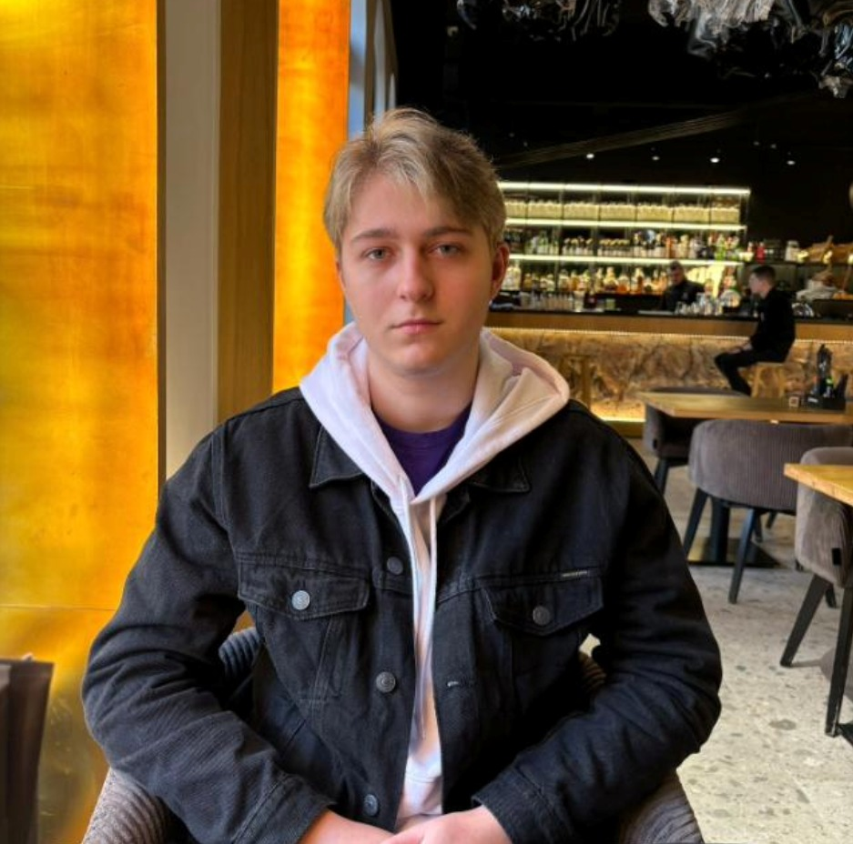

Onita-Darius-Liviu-Marian 
Summary
Aspiring full-stack web developer passionate about learning, collaboration, and building user-friendly digital experiences. Currently developing skills in HTML, CSS, and JavaScript through hands-on projects. More about me
Education
Diploma – Economics Technician
"Mihai Viteazul" Technical College, Oradea 2018 - 2022
Work experiences
Support-Coach
CGS Romania - May 2024 - Present
Supervised and mentored a team of customer service agents during training and nesting.
Conducted one-on-one coaching sessions and delivered performance briefs.
Communicated directly with client (Verizon) to align expectations and share feedback.
Gained leadership and performance analysis experience, which I actively apply in my transition to full-stack development.
Support-Production
CGS Romania - Feb 2024 - May 2024
Resolved escalated issues in the live production environment for customer service agents.
Collaborated with team leads to optimize processes and improve service quality.
Strengthened analytical thinking and real-time problem-solving skills.
Monitored performance metrics and ensured adherence to KPIs.
Customer Service Agent
CGS Romania - Sep 2022 - Feb 2024
Handled customer inquiries via phone, delivering prompt and effective solutions with a strong focus on customer satisfaction.
Consistently met or exceeded performance targets, missing key KPIs only twice over an 18-month period.
Documented customer interactions and escalated complex issues to higher support tiers when necessary.
Developed strong communication, multitasking, and problem-solving skills in a fast-paced environment.
Skills
English Language: Intermediate
Microsoft Word, Excel, PowerPoint: Intermediate proficiency
Slack: Intermediate user
Strong attention to detail
Multitasking abilities
Leadership and team coaching
Performance monitoring and KPI management
Client communication and relationship management
Problem-solving and issue resolution
Time management and prioritization
Collaboration and teamwork
Adaptability and continuous learning mindset
About me or Contact me also check My hobbies
Copyright @ 2025 Onita Darius. All rights reserved.